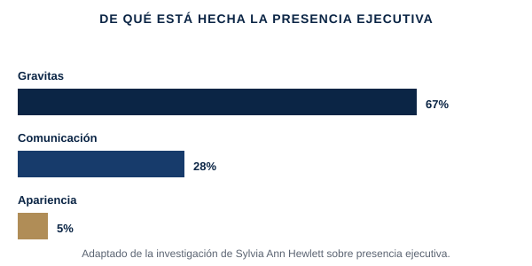

Tener razón no es lo mismo que resultar creíble. Esto trata de los comportamientos concretos y aprendibles que hacen que la gente confíe en tu criterio y quiera seguirte en una decisión difícil.
Estar en la sala donde se toma la decisión real, y aun así no ser la voz que la gente recuerda; llegar a una presentación de comité bien preparado, pero sin aterrizar con el peso que tu contenido merece; sentir que tienes que trabajar el doble para que te vean "listo" para el siguiente nivel.
La investigación, ampliamente citada, de la economista Sylvia Ann Hewlett sobre presencia ejecutiva — ese "factor" que hace creíbles y dignos de seguir a los líderes senior — la descompone en tres elementos medibles, con pesos muy distintos: gravitas (cómo actúas bajo presión, tu confianza y capacidad de decisión — aproximadamente dos tercios de la impresión), comunicación (cómo hablas, incluida la capacidad de leer una sala y dirigirla) y apariencia (dar el perfil — un factor mucho más pequeño de lo que la mayoría asume, pero no nulo). La implicación útil es que la presencia no es algo que tienes o no tienes — la gravitas en particular se puede construir de forma deliberada, a través de cómo gestionas los momentos de alto riesgo, no intentando parecer más seguro de lo que realmente estás.

Adaptación simplificada y con fines formativos de la investigación de Sylvia Ann Hewlett sobre presencia ejecutiva.
Los tres componentes de la presencia ejecutiva — y cuál importa realmente más, según la investigación.
Vídeo extendido (15-25 min), un PDF framework/checklist propio, un workbook de aplicación práctica, y un resumen curado de Executive Presence de Sylvia Ann Hewlett y la investigación de Amy Cuddy sobre la presencia bajo presión.
Gratuito si eres cliente de coaching activo · El acceso por suscripción para el público general se abrirá próximamente.